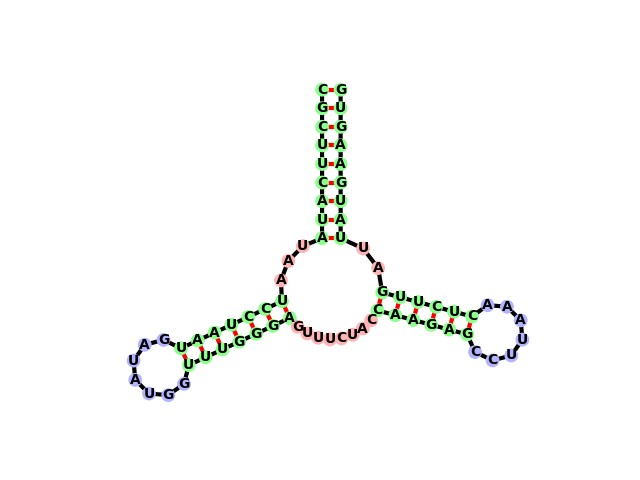
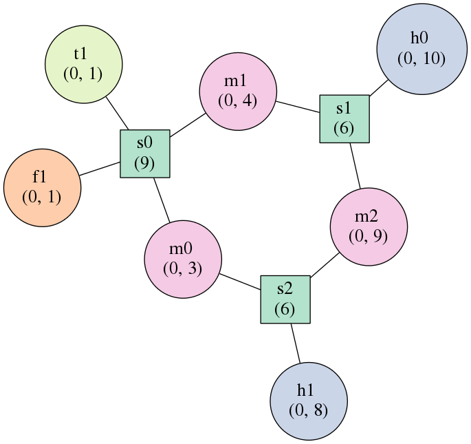
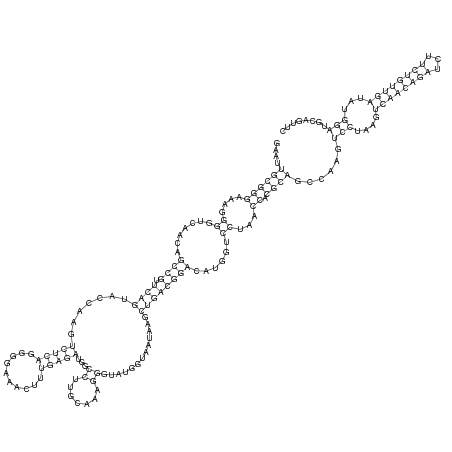
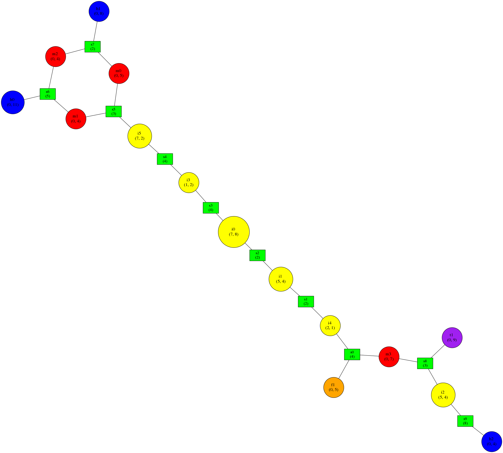
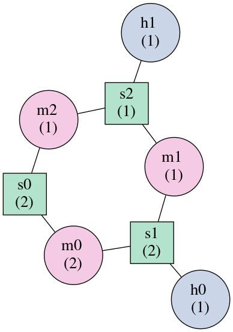

RNA Secondary Structure as a Graph Using the forgi Library¶
Introduction¶
forgi is a library for manipulating RNA as a graph-like structure. It provides classes for reading, storing, manipulating and outputting RNA structures. It classifies and stores RNA secondary structure in a data structure that quickly allows one to determine which elements are connected and which nucleotides they contain.
The secondary structure of an RNA molecule can be divided into five different types of ‘elements’. Each element is assigned a name that can be used to refer to it and to determine its identity:
- fiveprime: The unpaired nucleotides at the 5’ end of a molecule/ chain. Always start with ‘f’ (e.g. ‘f0’).
- threeprime: The unpaired nucleotides at the 3’ end of a molecule/ chain. Always start with ‘t’ (e.g. ‘t0’)
- stem: Regions of contiguous canonical Watson-Crick base-paired nucleotides.
- Always start with ‘s’ (e.g., ‘s0’, ‘s1’, ‘s2’, …)
- interior loop: Bulged out nucleotides. Unpaird double stranded regions, flanked by stems on either side.
- Always start with ‘i’ (‘i0’, ‘i1’, ‘i2’,…)
- multiloop segment: Single-stranded unpaired regions. Always start with ‘m’. (‘m0’, ‘m1’, ‘m2’…)
- In the current version of forgi, pseudo-knots and exterior loops segments between stems are treated as multiloop segments.
- hairpin loop: Always start with ‘h’.
A Simple Example¶
The use of forgi is perhaps best illustrated with an example.
Let’s take an RNA sequence:
CGCUUCAUAUAAUCCUAAUGAUAUGGUUUGGGAGUUUCUACCAAGAGCCUUAAACUCUUGAUUAUGAAGUG
We can predict its secondary structure using one of a number of tools, including the Vienna RNA Package’s RNAfold program:
http://rna.tbi.univie.ac.at/cgi-bin/RNAWebSuite/RNAfold.cgi
This will return a minimum free energy structure which can be represented using dot-bracket notation:
(((((((((...((((((.........))))))........((((((.......))))))..)))))))))
This notation corresponds to a structure containing the base pairs shown in the following figure:
{kind=link}
Evident in this image are six structural elements.
- 3 stems
- 2 hairpin loops
- 1 multiloop
The multiloop itself can be divided into three unpaired sections of nucleotides. Each of these elements is connected to certain other elements. For example, the stem at the top is connected to two unpaired regions of the multi-loop. Both of the hairpin loops are connected one stem each. If we abstract away the sequence information, we can imagine the structure as being represented by a graph.
The forgi package can be used to do just this by using the dotbracket_to_bulge_graph.py script:
$ python examples/rnaConvert.py examples/input/1y26_ss.dotbracket -T forgi
name untitled
length 71
define m2 34 41
define h1 48 54
define s2 42 47 55 60
define s1 13 18 28 33
define s0 1 9 63 71
define m1 10 12
define h0 19 27
define m0 61 62
connect s2 h1 m0 m2
connect s1 h0 m1 m2
connect s0 m1 m0
The result is an adjacency list of all the elements. The stems are defined with names starting with ‘s’, hairpins with an ‘h’, multiloops with an ‘m’, interior loops with an ‘i’, five-prime unpaired regions with an ‘f’ and three-prime unpaired regions with a ‘t’. The numbers indicate the nucleotides that are present in each element. So the stem s0 is composed of nucleotides 1 to 9 on one strand and 63 to 71 on the other. The other elements are described in a similar manner. The hairpin h0 includes the nucleotides 19 to 27.
In this case it is difficult to picture which section is which from the text representation. To make it easier, we will generate a file readable by graphviz. The neato program can take that as input and create a nice visualization of the graph:
python examples/rnaConvert.py examples/input/1y26_ss.dotbracket -T neato | neato -Tpng -o 1y26_neato.png
The result is the following graph representation of the structure.
{kind=link}
Here square nodes represent stems and round nodes represent other elements. The connections in this representation do not contain any nucleotides, but simply illustrate which coarse grained elements are connected to each other.
The label of the nodes are the element names (as described above), so “s0” means stem number 0. The numbers in parenthesis below the element names represent the number of nucleotides in the element. In case of interior loops (not shown in this example), there can be two numbers, if the RNA has unpaired nucleotides on both sides of the bulge.
Notice the similarity to the original base paired image? The top stem can be identified as s0. The two hairpin loops are h0 and h1. The regions in the multiloop are given their own names.
This graph visualization is useful to get an idea of the coarse grained representation of the RNA introduced by forgi. However, some information is lost in this picture: This graph only shows, which stem is connected to which bulge, but it does not show which side of the stem and bulge is involved in the connection.
Getting a Condensed Representation of the Element Types¶
Mapping nucleotide positions to secondary structure element types (stems, hairpins, multiloops) is easily done using an example script:
$ python examples/rnaConvert.py examples/input/1y26_ss.dotbracket -T element_string
(((((((((...((((((.........))))))........((((((.......))))))..)))))))))
sssssssssmmmsssssshhhhhhhhhssssssmmmmmmmmsssssshhhhhhhssssssmmsssssssss
In this example, one can clearly see that the paired regions are stems. Some multiloops are present as well as two hairpin regions.
Another Example¶
Here’s an example with a longer sequence.
Let’s take an RNA sequence:
GAAUUGCGGGAAAGGGGUCAACAGCCGUUCAGUACCAAGUCUCAGGGGAAACUUUGAGAUGGCCUUGCAAAGGGUAUGGUAAUAAGCUGACGGACAUGGUCCUAACCACGCAGCCAAGUCCUAAGUCAACAGAUCUUCUGUUGAUAUGGAUGCAGUUC
With a secondary structure:
....((((((....((.......((((.((((.(((...(((((..........)))))...((.......))....)))......))))))))......))...)).))))......(((....((((((((...))))))))...)))........
Which looks like this:
{kind=link}
Can be transformed using the command:
python examples/rnaConvert.py -T neato examples/input/1gid_ss.dotbracket | neato -Tpng -o 1gid_neato.png
Into a graph that looks like this:
{kind=link}
Note that the graph and the secondary structure representation are oriented differently. The multiloop at the top of the graph is at the bottom of the secondary structure. Furthermore, some of the small bulges clearly visible in the graph (as yellow nodes) are hard to see in the secondary structure although they are indeed present.
Loading Structures¶
There are a number of ways to represent an RNA secondary structure and forgi provides functionality for reading a number of them.
Loading a Structure from a Dot-Bracket String¶
A pseudoknot-free secondary structure can be represented a sequence of dots and
brackets where the dots represent unpaired bases and the matching brackets
represent base pairs. This representation is often delivered as the output of
secondary structure prediction tools such as RNAfold and Mfold. It can
also be used as input to create a skeleton graph in forgi:
>>> import forgi.graph.bulge_graph as fgb
>>> bg = fgb.BulgeGraph()
>>> bg.from_dotbracket('((..))..((..))')
>>> print bg.to_bg_string()
name untitled
length 14
seq_ids
define h1 11 12
define s1 9 10 13 14
define s0 1 2 5 6
define m0 7 8
define h0 3 4
connect s1 h1 m0
connect s0 h0 m0
Loading a Structure from a BPSEQ Formatted File:¶
A bpseq-formatted file stores the sequence and base-pair content of an RNA
secondary structure using one line for each nucleotide in the sequence. Each
line has three columns, the index of the nucleotide being described, it’s
identity (A, C, G, or U) and the index of its pairing partner (0 if none). We
can load this file and create graph structure from it using the
from_bpseq_str function:
>>> import forgi.graph.bulge_graph as fgb
>>> bg = fgb.BulgeGraph()
>>> bpstr="""1 A 0
... 2 A 12
... 3 A 11
... 4 A 9
... 5 A 8
... 6 A 0
... 7 A 0
... 8 A 5
... 9 A 4
... 10 A 0
... 11 A 3
... 12 A 2
... 13 A 0
... 14 A 0
... 15 A 20
... 16 A 19
... 17 A 0
... 18 A 0
... 19 A 16
... 20 A 15
... 21 A 0
... """
>>>
>>> bg.from_bpseq_str(bpstr)
>>> print bg.to_bg_string()
name untitled
length 21
seq AAAAAAAAAAAAAAAAAAAAA
seq_ids
define f1 1 1
define i0 10 10
define h1 17 18
define s2 15 16 19 20
define s1 4 5 8 9
define s0 2 3 11 12
define t1 21 21
define h0 6 7
define m0 13 14
connect s2 h1 m0 t1
connect s1 i0 h0
connect s0 f1 m0 i0
Loading a Structure from a Fasta File¶
A fasta file containing an id, a sequence and a secondary structure in dot-bracket notation can be used to create a BulgeGraph structure:
>>> import forgi.graph.bulge_graph as fgb
>>> bg = fgb.from_fasta_text(""">blah
... AAAACCGGGCCUUUUACCCCAAAUUGGAA
... ((((..(((..)))..))))...((..))
... """)
>>> print bg.to_bg_string()
name blah
length 29
seq AAAACCGGGCCUUUUACCCCAAAUUGGAA
seq_ids
define s0 1 4 17 20
define i0 5 6 15 16
define s1 7 9 12 14
define h0 10 11
define m0 21 23
define s2 24 25 28 29
define h1 26 27
connect s2 h1 m0
connect s1 i0 h0
connect s0 i0 m0
Querying the Secondary Structure¶
Finding the Partner of a Base Pair¶
Consider the situation where we have a secondary structure and we want to know the base-pairing partner of nucleotide n. This is easily done with forgi:
>>> import forgi.graph.bulge_graph as cgb
>>> bg = cgb.BulgeGraph()
>>> bg.from_dotbracket('(((((((((...((((((.........))))))........((((((.......))))))..)))))))))')
>>> bg.pairing_partner(1)
71
>>> bg.pairing_partner(13)
33
Extracting a Pair Table¶
We can obtain a pair table describing the pairing pattern of the nucleotides in this molecule. The first element of the pair table always contains the number of nucleotides in the secondary structure. Every subsequent element i either contains the number 0, indicating the nucleotide i is unpaired or an integer j which is the pairing partner of i:
>>> import forgi.graph.bulge_graph as cgb
>>> bg = cgb.BulgeGraph()
>>> bg.from_dotbracket('(((((((((...((((((.........))))))........((((((.......))))))..)))))))))')
>>> bg.to_pair_table()
[71, 71, 70, 69, 68, 67, 66, 65, 64, 63, 0, 0, 0, 33, 32, 31, 30, 29, 28, 0, 0, 0, 0, 0, 0, 0, 0, 0, 18, 17, 16, 15, 14, 13, 0, 0, 0, 0, 0, 0, 0, 0, 60, 59, 58, 57, 56, 55, 0, 0, 0, 0, 0, 0, 0, 47, 46, 45, 44, 43, 42, 0, 0, 9, 8, 7, 6, 5, 4, 3, 2, 1]
Getting the Name of an Element from the Residue Number¶
Various applictions of forgi require knowledge of the internal name
of a particular element. As these names are generated by forgi itself, it’s
useful to be to retrieve the name of an element given the number of a
residue which is part of it. To demonstrate how to do this we will first need
to load a secondary structure:
>>> import forgi.graph.bulge_graph as fgb
>>> bg = fgb.BulgeGraph(dotbracket_str='((..))..((..))')
>>> print bg.to_bg_string()
name untitled
length 14
seq_ids
define s0 1 2 5 6
define h0 3 4
define m0 7 8
define s1 9 10 13 14
define h1 11 12
connect s1 h1 m0
connect s0 h0 m0
Then we can simply query for the element name based on the residue number:
>>> bg.get_node_from_residue_num(1)
's0'
>>> bg.get_node_from_residue_num(3)
'h0'
>>> bg.get_node_from_residue_num(9)
's1'
This can then be used to in other applications such as Retrieving the Dimensions of a Loop, Dissolving Stems, Iterating Over the Nucleotides of an Interior Loop, etc…
Finding the Length of the Longest Stem¶
For whatever reason, one may be interested in finding out how long the longest stem in a secondary structure is. Initially, one may assume that this can easily be done by searching for the longest string of ‘(‘ or ‘)’ in the dot-bracket file. Unfortunately, structures with an interior loop which has an unpaired base on only one strand will lead to an erronous result in this example. The decomposition provided by forgi will, however, take this into account in enumerating the structural elements. It then becomes a matter of iterating over the stems and checking their lengths:
bg = cgb.BulgeGraph()
bg.from_dotbracket(brackets)
biggest_stem = (-1, 'x')
for s in bg.stem_iterator():
if bg.stem_length(s) > biggest_stem[0]:
biggest_stem = (bg.stem_length(s), s)
This is best illustrated with two examples:
echo '..((((..))))..' | python examples/longest_stem.py -
4
echo '..((((..).)))..' | python examples/longest_stem.py -
3
In the first case, the longest stem is the only stem. In the second case, what appears to be one large stem of length 4, is actually two stems of length 1 and 3.
Getting the Sequence of an Element and its Neighbors¶
Suppose we want to find out not only the sequence of an element, but also the
elements that surround it? This is easily done using the
get_flanking_sequence function. To illustrate, let’s create a graph from a
fasta representation:
import forgi.graph.bulge_graph as fgb
bg = fgb.BulgeGraph()
fa = """>blah
AAAACCGGGCCUUUUACCCCAAAUUGGAA
((((..(((..)))..))))...((..))
"""
bg.from_fasta(fa)
From the structure, we can see that there are two hairpins (h0 and h1), one
interior loop (i0) and one multiloop (m0). We can get the sequence for h0
and it’s neighboring node (s0) like so:
>>> bg.get_flanking_sequence('h0')
'GGGCCUUU'
The same can be done for the multiloop (m0):
>>> bg.get_flanking_sequence('m0')
'CCCCAAAUU'
The interior loop is a little more tricky because it is double stranded. From the interior loop, we need to pass in a parameter indicating which side we want (0 or 1). The 0’th strand corresponds to the one with the lower numbered nucleotides, whereas the 1’st strand is the other. The default is the 0’th strand:
>>> bg.get_flanking_sequence('i0')
'AAAACCGGG'
>>> bg.get_flanking_sequence('i0', side=1)
'UUUUACCCC'
Retrieving the Dimensions of a Loop¶
Each loop can be said to have a size or dimension. For interior loops, the dimensions take the form of a tuple and indicate how many unpaired nucleotides are on each side. For multiloops each segment is represented individually and thus should have only one dimension (how many unpaired nucleotides are in that segment), but in order to maintain consistency with interior loops, we make it a tuple by attaching 1000 as the second value:
import forgi.graph.bulge_graph as fgb
>>>
>>> bg = fgb.BulgeGraph(dotbracket_str='((.(.))..((..)))')
>>> bg.get_bulge_dimensions('i0')
(1, 0)
>>> bg.get_bulge_dimensions('m0')
(0, 1000)
>>> bg.get_bulge_dimensions('m1')
(0, 1000)
>>> bg.get_bulge_dimensions('m2')
(2, 1000)
Dissolving Stems¶
To remove a stem from the skeleton graph, use the dissolve_stem() member
function. This will remove the base pairs that were part of the stem and merge
them with the adjacent unpaired regions:
>>> import forgi.graph.bulge_graph as fgb
>>> bg = fgb.BulgeGraph(dotbracket_str='((..))..((..))')
>>> bg.dissolve_stem('s0')
>>> print bg.to_dotbracket_string()
........((..))
>>> bg.dissolve_stem('s1')
>>> print bg.to_dotbracket_string()
..............
Finding Out Which Side of a Stem a Loop Is On¶
If one imagines a stem as having a direction where its start is the position of
the lowest numbered nucleotide within it, then a loop adjacent to the stem will
be on one side of it. Which side it’s on can be elucidated using the
get_sides function:
>>> import forgi.graph.bulge_graph as fgb
>>> bg = fgb.BulgeGraph(dotbracket_str="..((..((..))..))..")
>>> bg.get_sides('s0', 'i0')
(1, 0)
>>> bg.get_sides('s1', 'i0')
(0, 1)
The result shows that the loop i0 is on side 1 of stem s0 and side 0 of
stem s1. If bg.get_sides(s,b) return a tuple (sb, se), where the nucleotides
in bg.coords[sb] are on the side of the loop.
Iteration¶
forgi provides iterators for the various elements, and base pairing in the structure.
Iterating Over the Nucleotides of an Interior Loop¶
Imagine that we have a model of an RNA structure, and we want to list all of the nucleotides which are in interior loop regions. This is can be done by combining an iterator which yields all of the interior loops and another iterator which iterates over the nucleotides within a particular element:
>>> import sys
>>> import forgi.graph.bulge_graph as cgb
>>> bg = cgb.BulgeGraph()
>>> bg.from_dotbracket("((..((..))..))..((..((..))..))")
>>> for iloop in bg.iloop_iterator():
... for rn in bg.define_residue_num_iterator(iloop):
... sys.stdout.write(str(rn) + " ")
...
10 11 12 13 2 3 4 5 26 27 28 29 18 19 20 21
Iterating Over The List of Elements¶
** Stems **
To iterate over each stem in the structure, use the stem_iterator() function:
>>> import forgi.graph.bulge_graph as fgb
>>> bg = fgb.BulgeGraph(dotbracket_str='((..((..))..))..((..((..))...)).')
>>> print list(bg.stem_iterator())
['s3', 's2', 's1', 's0']
** Interior Loops **
To iterate over each interior loop in the structures, use the iloop_iterator():
>>> print list(bg.iloop_iterator())
['i1', 'i0']
** Others **
For multiloops, hairpin loops, fiveprime regions and threeprimes regions use
mloop_iterator(), hloop_iterator(), floop_iterator and tloop_iterator,
respectively:
>>> print list(bg.mloop_iterator())
['m0']
>>> print list(bg.hloop_iterator())
['h1', 'h0']
>>> print list(bg.floop_iterator())
[]
>>> print list(bg.tloop_iterator())
['t1']
Notice that floop_iterator() doesn’t yield any values. This is because there
is no 3’ unpaired region in this structure.
Graph Functions¶
Finding the Minimum Spanning Tree of a Graph¶
Can we create a subgraph such that all stems are connected and no cycles remain? Recall that cycles only occur in multiloop sections (junctions). Can we return a representation of the structure such that all stems are connected with the least number of nucleotides between them? If interior loops and multiloop segements were considered edges, then this would be the equivalent of a minimum spanning tree. Since they are nodes, then the result is not a minimum spanning tree but simply a representation of the secondary structure with broken multiloops.
As an example, consider the following structure:
{kind=link}
To break the cycle, we would like to remove the segment ‘m0’. This is easily
done using the get_mst() function of the BulgeGraph data structure:
>>> import forgi.graph.bulge_graph as fgb
>>> bg = fgb.BulgeGraph(dotbracket_str="((..((.)).(.).))")
>>> bg.get_mst()
set(['s2', 's1', 's0', 'm1', 'm2'])
The result contains all the nodes except the ones removed to break the cycles. The implementation uses a slightly modified version of Kruskal’s algorithm.
Traversing the Graph¶
We can traverse all of the loops in a graph in breadth-first manner using the
traverse_graph function:
>>> import forgi.graph.bulge_graph as fgb
>>> bg = fgb.BulgeGraph(dotbracket_str='(.(.(.(.).(.).).(.).))')
>>> bg.traverse_graph()
[('s0', 'i0', 's1'), ('s1', 'm1', 's5'), ('s5', 'm4', 's2'), ('s2', 'm3', 's4'), ('s4', 'm5', 's3')]
Starting with the first stem, s0, we visit each loop that connects it to another stem and return all the visited loops as a list of tuples. Each tuple has the following three elements: (from_stem, loop, to_stem).
Finding the elements which form the multiloops of a structure¶
The find_multiloop_loops() function returns a list of sets where each set
contains the elements that are part of a particular junction.

Example:
>>> import forgi.graph.bulge_graph as fgb
>>> bg = fgb.BulgeGraph(dotbracket_str='(.(.(.(.).(.).).(.).))')
>>> print bg.find_multiloop_loops()
[set(['s3', 's2', 's4', 'm5', 'm3', 'm2']), set(['s2', 's1', 's5', 'm4', 'm1', 'm0'])]
Calculating the Minimum Secondary Structure Distance Between Two Elements¶
The secondary structure distance, in our case, will be calculated as the distance along the backbone or along base-pair links. When calculated between two elements, it is the minimum distance between any two pairs of nucleotides in each of the two elements.
Consider the following example:
>>> bg = fgb.BulgeGraph(dotbracket_str='((..))..((..))((..))')
>>> bg.ss_distance('s0', 's1')
3
>>> bg.ss_distance('s0', 's2')
5
>>> bg.ss_distance('s0', 'h2')
7
The first distance requires going over three backbone edges. The second distance Requires three backbone, one base pair, and one more backbone. The last distance requires three backbone, one base pair, and three more backbone links.
Selecting a Random Subgraph¶
The random_subgraph function picks a random quantity of elements which will
become part of the subgraph. A random element is chosen as a starting point and
the graph is traversed in a random manner until at least the chosen number of
nodes have been added. When that number is exceeded, the traversal stops. In
cases where an interior loop or a multiloop segment is added, the stem on the
other end is automatically added as well. Example, using the graph in the
previous section:
>>> import forgi.graph.bulge_graph as fgb
>>> bg = fgb.BulgeGraph(dotbracket_str='(.(.(.(.).(.).).(.).))')
>>> sg = bg.random_subgraph(5)
>>> print sg
['s3', 's2', 'm2', 's4', 'm5']
From this we can create a new graph, compete with defines and connections. Only the sequence and its related information (length, ids) will not be carried over:
>>> nbg = fgb.bg_from_subgraph(bg, sg)
>>> print nbg.to_bg_string()
name untitled
length 0
seq_ids
define s3 7 7 9 9
define s2 5 5 15 15
define s4 11 11 13 13
define m5 10 10
define m2 6 6
connect s3 m5 m2
connect s2 m2
connect s4 m5
Which, when visualized, looks like this:

Applications¶
Rosetta rna_denovo Constraint File Creation¶
The Rosetta protein structure prediction package provides a program for RNA 3D structure prediction called rna_denovo. To specify the secondary structure of an RNA molecule, one needs to pass in a parameter file indicating which nucleotides are paired.
Given an dot-bracket sequence as input, forgi can be easily be used to generate the parameter file for rna_denovo.Using the secondary structure of 1y26 (shown in the first example) one can run the appropriate example:
python examples/dotbracket_to_rosetta_constraints.py examples/1y26_ss.dotbracket
And get an appropriately formatted parameter file:
STEM PAIR 42 60
STEM PAIR 43 59
STEM PAIR 44 58
STEM PAIR 45 57
STEM PAIR 46 56
STEM PAIR 47 55
STEM PAIR 13 33
STEM PAIR 14 32
STEM PAIR 15 31
STEM PAIR 16 30
STEM PAIR 17 29
STEM PAIR 18 28
STEM PAIR 19 27
STEM PAIR 1 71
STEM PAIR 2 70
STEM PAIR 3 69
STEM PAIR 4 68
STEM PAIR 5 67
STEM PAIR 6 66
STEM PAIR 7 65
STEM PAIR 8 64
STEM PAIR 9 63